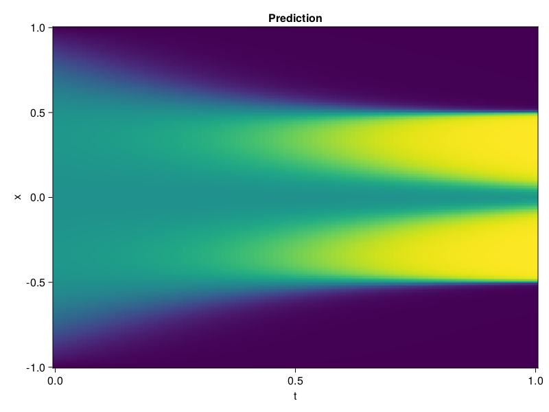

Allen-Cahn Equation with Sequential Training
In this tutorial we are going to solve the Allen-Cahn equation with periodic boundary condition from $t=0$ to $t=1$. The traning process is split into four stages, namely $t\in [0,0.25]$, $t\in [0.0,0.5]$, $t\in [0.0,0.75]$ and $t\in [0.0, 1.0]$.
using ModelingToolkit, IntervalSets
using Sophon
using Optimization, OptimizationOptimJL
@parameters t, x
@variables u(..)
Dₓ = Differential(x)
Dₓ² = Differential(x)^2
Dₜ = Differential(t)
eq = Dₜ(u(x, t)) - 0.0001 * Dₓ²(u(x, t)) + 5 * u(x,t) * (abs2(u(x,t)) - 1.0) ~ 0.0
domain = [x ∈ -1.0..1.0, t ∈ 0.0..0.25]
bcs = [u(x,0) ~ x^2 * cospi(x),
u(-1,t) ~ u(1,t)]
@named allen = PDESystem(eq, bcs, domain, [x, t], [u(x, t)])\[ \begin{align} - 0.0001 \frac{\mathrm{d}}{\mathrm{d}x} \frac{\mathrm{d}}{\mathrm{d}x} u\left( x, t \right) + 5 \left( -1 + \left|u\left( x, t \right)\right|^{2} \right) u\left( x, t \right) + \frac{\mathrm{d}}{\mathrm{d}t} u\left( x, t \right) =& 0 \end{align} \]
Then we define the neural net, the sampler, and the training strategy.
chain = FullyConnected(2, 1, tanh; hidden_dims=16, num_layers=4)
pinn = PINN(chain)
sampler = QuasiRandomSampler(500, (300, 100))
strategy = NonAdaptiveTraining(1, (50, 1))
prob = Sophon.discretize(allen, pinn, sampler, strategy)OptimizationProblem. In-place: true
u0: ComponentVector{Float64}(layer_1 = (weight = [1.1195752620697021 0.23545405268669128; -0.30523180961608887 -0.710543155670166; … ; 0.5681870579719543 -0.5857874751091003; -0.9398396015167236 -0.37870994210243225], bias = [0.0; 0.0; … ; 0.0; 0.0;;]), layer_2 = (weight = [-0.2557620406150818 0.0083780437707901 … -0.6304779052734375 0.07951540499925613; -0.3846854865550995 0.11101219803094864 … 0.6577103734016418 -0.17970357835292816; … ; 0.43707185983657837 0.5490458607673645 … 0.3336316645145416 0.5058301091194153; -0.33518117666244507 -0.11579221487045288 … -0.1722410023212433 0.19551220536231995], bias = [0.0; 0.0; … ; 0.0; 0.0;;]), layer_3 = (weight = [-0.2369261384010315 0.35688358545303345 … -0.41999152302742004 0.2713955044746399; -0.6482717990875244 -0.5516781210899353 … 0.5103066563606262 0.5150578022003174; … ; 0.07316409796476364 0.38210994005203247 … 0.21567566692829132 0.29766783118247986; 0.43152356147766113 -0.6971657872200012 … 0.4611571729183197 -0.10402614623308182], bias = [0.0; 0.0; … ; 0.0; 0.0;;]), layer_4 = (weight = [0.34263911843299866 -0.7097266316413879 … -0.3549851179122925 -0.037897564470767975; -0.5343915820121765 -0.36919406056404114 … 0.5131027102470398 -0.064486064016819; … ; 0.587031364440918 -0.15521150827407837 … 0.48616793751716614 0.18281269073486328; -0.43974047899246216 0.2592860162258148 … -0.4188731014728546 -0.4049369692802429], bias = [0.0; 0.0; … ; 0.0; 0.0;;]), layer_5 = (weight = [0.3844206631183624 -0.32579079270362854 … -0.6861925721168518 -0.33103522658348083], bias = [0.0;;]))We solve the equation sequentially in time.
function train(allen, prob, sampler, strategy)
bfgs = BFGS()
res = Optimization.solve(prob, bfgs; maxiters=2000)
for tmax in [0.5, 0.75, 1.0]
allen.domain[2] = t ∈ 0.0..tmax
data = Sophon.sample(allen, sampler)
prob = remake(prob; u0=res.u, p=data)
res = Optimization.solve(prob, bfgs; maxiters=2000)
end
return res
end
res = train(allen, prob, sampler, strategy)u: ComponentVector{Float64}(layer_1 = (weight = [2.29986489936687 -0.9421649688409589; 0.1523360408040525 -1.1084213278430668; … ; 0.43572097027898743 -0.05940630591178966; -1.6401457745050536 -0.501385291604029], bias = [1.576377062826731; 0.2834189076150941; … ; -0.05776481720397767; 1.2850876241096338;;]), layer_2 = (weight = [0.07814664010472842 0.171006984094483 … -0.40749246850041376 -0.16679249898259801; -0.01704018838698043 0.3241195974422264 … 0.7818081011453173 0.0014922617789377413; … ; 0.7023476424434018 0.6420765807029885 … 0.06976726000814157 0.8678867552289065; -1.1922768885303572 -0.14232981938542302 … -0.38913209893983225 0.5922330234057729], bias = [0.24688581862956135; -0.4917408108607208; … ; 0.4230570766885675; 0.3052378526862427;;]), layer_3 = (weight = [-0.12310301586634742 0.2032134763426615 … -0.6880368092676905 0.38427585229170386; -0.5020423387962726 -0.22372610933936324 … 0.30819353742757705 1.1197098551388494; … ; 0.16415796631584909 0.1844904557646313 … 0.8303483064673209 0.48622388442270253; 0.4520259435786283 -0.9067453807356219 … 0.5873020284931545 -0.5144572942797986], bias = [-0.2688733025665841; 0.23821577390708407; … ; 0.26480485520359126; -0.32712464554421833;;]), layer_4 = (weight = [0.35597173091832457 -0.6407921066774365 … -0.2788647725372546 -0.38599883957297276; -0.09728515783928078 0.4420602744829151 … 0.3404059812125682 0.19809112918592378; … ; 0.37438530576563794 -0.16914775927373377 … 0.5158925720909839 0.18364859835222305; -0.49488414407341824 -0.014093255467412242 … -0.8275995551102969 -0.5181211602482102], bias = [-0.13662489820351426; -0.13229855489303147; … ; 0.06409409386885408; 0.4733468882434119;;]), layer_5 = (weight = [0.001497535418138461 -0.5530192031834748 … -0.5464885416149051 -0.1543981224912381], bias = [-0.5747909936012845;;]))Let's plot the result.
using CairoMakie
phi = pinn.phi
xs, ts = [infimum(d.domain):0.01:supremum(d.domain) for d in allen.domain]
axis = (xlabel="t", ylabel="x", title="Prediction")
u_pred = [sum(pinn.phi([x, t], res.u)) for x in xs, t in ts]
fig, ax, hm = heatmap(ts, xs, u_pred', axis=axis)